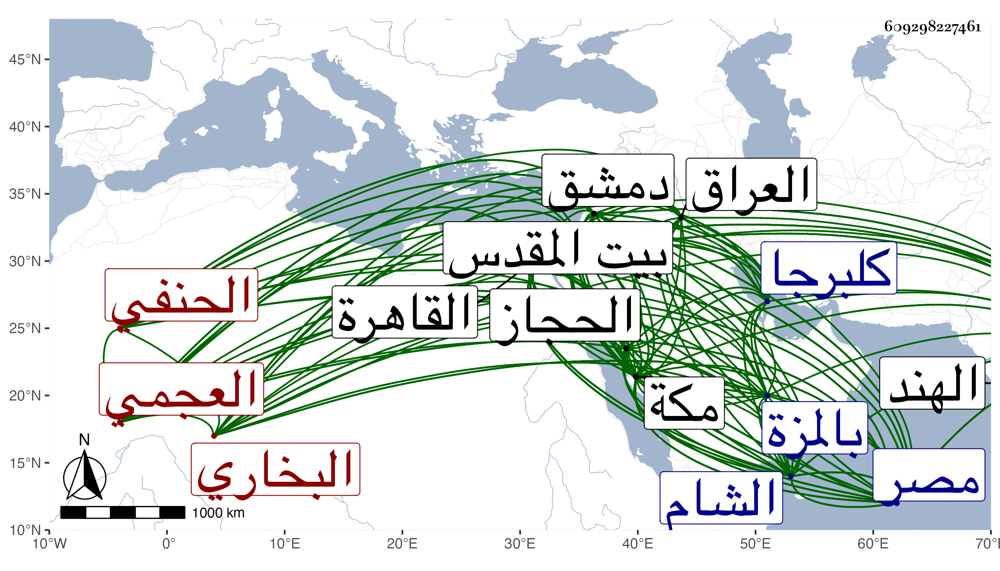

0902Sakhawi.DawLamic.ITO20230111-ara1.EIS1600.609298227461
Biography ID: 609298227461
751
محمد بن محمد بن محمد بن محمد بن محمد بن محمد بن محمد العلاء أبو عبد الله البخاري العجمي الحنفي وسماه بعضهم عليا وهو غلط . ولد سنة تسع وسبعين وسبعمائة ونقل عن ابن قاضي شهبة أنه فيما قاله له في حدود سنة سبعين ببلاد العجم ونشأ بها فأخذ عن أبيه وخاله العلاء عبد الرحمن والسعد التفتازاني في آخرين وارتحل في شبيبته إلى الأقطار في طلب العلم إلى أن تقدم في الفقه والأصلين والعربية واللغة والمنطق والجدل والمعاني والبيان والبديع وغيرها من المعقولات والمنقولات وترقى في التصوف والتسليك ومهر في الأدبيات ، وتوجه إلى بلاد الهند فقطن كلبرجا منها ونشر بها العلم والتصوف وكان ممن قرأ عليه ملكها وترقى عنده إلى الغاية لما وقر عنده من علمه وزهده وورعه ، ثم قدم مكة فجاور بها وانتفع به فيها غالب أعيانها ثم قدم القاهرة فأقام بها سنين وانثال عليه الفضلاء من كل مذهب وعظمه الأكابر فمن دونهم بحيث كان إذا اجتمع معه القضاة يكونون عن يمينه وعن يساره كالسلطان وإذا حضر عنده أعيان الدولة بالغ في وعظهم والإغلاظ عليهم بل ويراسل السلطان معهم بما هو أشد في الإغلاظ ويحضه عن إزالة أشياء من المظالم مع كونه لا يحضر مجلسه وهو مع هذا لا يزداد إلا إجلالا ورفعة ومهابة في القلوب وكان من ذلك سؤاله في أثناء سنة إحدى وثلاثين في إبطال إدارة المحمل حسما لمادة الفساد الذي جرت العادة بوقوعه عند إرادته فأمر بعقد مجلس عند العلاء في ذلك فكان من قول شيخنا ينبغي أن ينظر في سبب إدارته فيعمل بما فيه المصلحة منها ويزال ما فيه المفسدة وذلك أن الأصل فيها إعلام أهل الآفاق بأن طريق الحجاز من مصر آمنة ليتأهب للحج منه من يريده لا يتأخر لخشية خوف انقطاع طريقه كما هو الغالب في طريقه من العراق فالإدارة لعلها لا بأس بها لهذا المعنى وما يترتب عليها من المفاسد إزالته ممكنة واتفق في هذا المجلس إجراء ذكر ابن عربي وكان ممن يقبحه ويكفره وكل من يقول بمقاله وينهى عن النظر في كتبه فشرع العلاء في إبراز ذلك ووافقه أكثر من حضر إلا البساطي ويقال أنه إنما أراد إظهار قوته في المناظرة والمباحثة له وقال إنما ينكر الناس عليه ظاهر الألفاظ التي يقولها وإلا فليس في كلامه ما ينكر إذا حمل لفظه على معنى صحيح بضرب من التأويل وانتشر الكلام بين الحاضرين في ذلك قال شيخنا وكنت مائلا مع العلاء وأن من أظهر لنا كلاما يقتضي الكفر لا نقره عليه وكان من جملة كلام العلاء الإنكار على من يعتقد الوحدة المطلقة ومن جملة كلام المالكي أنتم ما تعرفون الوحدة المطلقة ، فبمجرد سماع ذلك استشاط غضبا وصاح بأعلى صوته أنت معزول ولو لم يعزلك السلطان يعني لتضمن ذلك كفره عنده بل قيل أنه قال له صريحا كفرت كيف يعذر من يقول بالوحدة المطلقة وهي كفر شنيع واستمر يصيح وأقسم بالله أن السلطان إن لم يعزله من القضاء ليخرجن من مصر فأشير على البساطي بمفارقة المجلس إخمادا للفتنة وبلغ السلطان ذلك فأمر فإحضار القضاة عنه فحضروا فسئلوا عن مجلس العلاء فقصه كاتب السر وهو ممن حضر المجلس الأول بحضرهم ودار بين شيخنا والبساطي في ذلك بعض كلام فتبرأ البساطي من مقالة ابن عربي وكفر من يعتقدها وصوب شيخنا قوله فسأل السلطان شيخنا حينئذ ماذا يجب عليه وهل تكفير العلاء له مقبول وماذا يستحق العزل أو التعزير فقال شيخنا لا يجب عليه شيء بعد اعترافه بما وقع وهذا القدر كاف منه وانفصل المجلس وأرسل السلطان يترضى العلاء ويسأله في ترك السفر فأبى فسلم له حاله وقال يفعل ما أراد ويقال أنه قال للسلطان أنا لا أقيم في هذه الممالك إلا بشروط ثلاث عزل البساطي ونفي خليفة يعني نزيل بيت المقدس وإبطال مكس قطيا . وبلغنا أنه خرج من القاهرة غضبا إما في هذه الواقعة أو غيرها لدمياط ليسافر منها فبرز البرهان الأبناسي والقاياتي والونائي وكلهم ممن أخذ عنه إليها حتى رجعوا به وكان قبل بيسير في السنة بعينها وصل إليه بإشارته من صاحب كلبرجا المشار إليها ثلاثة آلاف شاش أو أكثر ففرق منها ألفا على الطلبة الملازمين له من جملتها مائة للصدر بن العجمي ليوفي بها دينه وتعفف بعضهم كالمحلي عن الأخذ بل فرق ما عينه العلاء له منها وهو ثلاثون شاشا على الفقراء وامتنع العلاء من إعطاء بعض طلبته كالسفطي مع طلبه منه بنفسه ولم يدخر لنفسه منها شيئا وعمل وليمة للطلبة في بستان ابن عنان صرف عليها ستين دينارا ، ثم بعد ذلك سنة أربع وثلاثين أو قبلها تحول إلى دمشق فقطنها وصنف رسالته فاضحة الملحدين بين فيها زيف ابن عربي وقرأها عليه شيخنا العلاء القلقشندي هناك في شعبان سنة أربع وثلاثين ثم البلاطنسي وآخرون وكذا اتفقت له حوادث بدمشق منها أنه كان يسأل عن مقالات التقي بن تيمية التي انفرد بها فيجيب بما يظهر له من الخطأ فيها وينفر عنه قلبه إلى أن استحكم أمره عنده فصرح بتبديعه ثم تكفيره ثم صار يصرح في مجلسه بأن من أطلق على ابن تيمية أنه شيخ الإسلام فهو بهذا الإطلاق كافر واشتهر ذلك فانتدب حافظ الشام الشمس بن ناصر الدين لجمع كتاب سماه الرد الوافر على من زعم أن من أطلق على ابن تيمية أنه شيخ الإسلام كافر جمع فيه كلام من أطلق عليه ذلك من الأئمة الأعلام من أهل عصره من جميع أهل المذاهب سوى الحنابلة وذلك شيء كثير وضمنه الكثير من ترجمة ابن تيمية وأرسل منه نسخة إلى القاهرة فقرظه من أئمتها شيخنا والعلم البلقيني والتفهني والعيني والبساطي بما هو عندي في موضع آخر فكان مما كتبه البساطي وهو رمي معذور ونفث مصدور هذه مقالة تقشعر منها الجلود وتذوب لسماعها القلوب ويضحك إبليس اللعين عجبا بها ويشمت وينشرح لها أباده المخالفين ونسبت ثم قال له لو فرضنا أنك اطلعت على ما يقتضي هذا من حقه فما مستندك في الكلام الثاني وكيف تصلح لك هذه الكلية المتناولة لمن سبقك ولمن هو آت بعدك إلى يوم القيامة وهل يمكنك أن تدعي أن الكل اطلعوا على ما اطلعت أنت عليه وهل هذا إلا استخفاف بالحكام وعدم مبالاة ببنى الأنام والواجب أن يطلب هذا القائل ويقال له لم قلت وما وجه ذلك فإن أتى بوجه يخرج به شرعا من العهدة كان والأبرح به تبريحا يرد أمثاله عن الإقدام على أعراض المسلمين انتهى . وكتب العلاء مطالعة إلى السلطان يغريه بالمصنف وبالحنابلة وفيه ألفاظ مهملة هو عندي مع كتاب قاضي الشام الشافعي الشهاب بن محمرة وفي شرح القصة طول وبلغنا عن أبي بكر بن أبي الوفا أن جنية كانت تابعة العلاء وكانت تأتيه في شكل حسن وتارة في شكل قبيح فتتزيا له من بعيد وهو مع الناس وأنه التمس منه كتابة تحصين ونحوه لمنعها فكتب له أشياء ولازمها فاستفاد منها أكثر مما كتب له غيره قال ولم أنزل عندك ولا أكلت طعامك إلا لأنه بلغني عنك الحجب قال ولم أعلم بذلك أحدا سواك واستكتمنيه فلم أذكره لأحد حتى مات وكان العلاء يكون مع الناس فتتراءى له فيغمض عينيه ويقرأ ذاك التحصين سرا ويغيب عن الناس فيظن أنه خشوع وتلاوة وذكر ثم لم يتفق حجبها بالكلية إلا على يد إبرهيم الأدكاوي كما أسلفته في ترجمته وقد تكرر اجتماع العز القدسي معه ببيت المقدس وبحث معه في أشياء أولها في كفر ابن عربي أهو مطابقة والتزام واتفقا على الثاني بعد أن كان العلاء على الأول وأنكر العز عليه تحفيه في حرم الأقصى محتجا بأن كعب الأحبار دخله يمشي حبوا فانحل عن المداومة على ذلك . ومن محاسن كلامه قوله لابن الهمام لما دخل عليه مرة وعنده جماعة من مريديه وجلس في حشي الحلقة قم فاجلس هنا يعني بجانبه فإن هذا ليس بتواضع لكونك في نفسك تعلم أن كل واحد من هؤلاء يجلك ويرفعك إنما التواضع أن تجلس تحت ابن عبيد الله بمجلس السلطان أو نحو هذا . وكان شديد النفرة ممن يلي القضاء ونحوه ولكن لما ولي منهم الكمال بن البارزي قضاء الشام وكان العلاء حينئذ بها سر وقال الآن أمن الناس على أموالهم وأنفسهم ولما اجتمع به ابن رسلان في بيت المقدس عظمه جدا في حكاية أسلفتها في ترجمته . وقد ذكره شيخنا في أنبائه فقال كان من أهل الدين والورع وله قبول عند الدولة وأقام بمصر مدة طويلة وتلمذ له جماعة وانتفعوا به ، وكان يتقن فن المعاني والبيان ويذكر أنه أخذه عن التفتازاني ويقرر الفقه على المذهبين ثم تحول إلى دمشق فاغتبطوا به وكان كثير الأمر بالمعروف . ومات بها كما قرأته بخط السيد التاج عبد الوهاب الدمشقي في صبيحة يوم الخميس ثالث عشرى رمضان سنة إحدى وأربعين بالمزة ودفن بسطحها وأرخه العيني في ثاني الشهر وقال أنه كان في الزهد على جانب عظيم وفي العلم كذلك وبعضهم في خامسه وقال أنه لم يخلف بعده مثله في تفننه وورعه وزهده وعبادته وقيامه في إظهار الحق والسنة وإخماده للبدع ورده لأهل الظلم والجور قال بعضهم أنه حج ورجع مع الركب الشامي سنة اثنتين وثلاثين إلى دمشق فانقطع بها ولازمه الشهاب بن عرب شاه حتى مات ، وقال المقريزي في عقوده : كان يسلك طريقا من الورع فيسمج في أشياء يحمله عليها بعده عن معرفة السنن والآثار وانحرافه عن الحديث وأهله بحيث كان ينهى عن النظر في كلام النووي ويقول هو ظاهر ويحض على كتب الغزالي وأغلق أبواب المسجد الحرام بمكة مدة حجه فكانت لا تفتح إلا أوقات الصلوات الخمس ومنع من نصب الخيام وإقامة الناس فيه أيام الموسم وأغلق أبواب مقصورة الحجرة النبوية ومنع كافة الناس من الدخول إليها وكان يقول : ابن تيمية كافر وابن عربي كافر فرد فقهاء الشام ومصر قوله في ابن تيمية وجمع في ذلك المحدث ابن ناصر الدين مصنفا انتهى . رحمه الله وإيانا .
